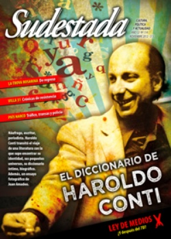

Buscar
Genealogía de una leyenda
A Carlos Enrique Olmedo, militante de las FAR, se lo recuerda por tres episodios: la toma de la ciudad bonaerense de Garín, la polémica que sostiene con Mario Roberto Santucho y su muerte, ocurrida en Córdoba el 3 de noviembre de 1971, en el "Combate de Ferreyra". Pero su vida estuvo marcada por una cantidad de pequeños actos que hicieron de su figura una leyenda de la militancia revolucionaria en la Argentina.
Edición N° 114
Noviembre 2012
Revista bimensual
Comprar edición impresaSumario
- Conti de la A a la Z
- De sicarios, patotas y punteros
- Para el lado de la sed
- El día después
- "La policía regula el delito organizado, no lo combate"
- Amores villeros
- Crónica de un magnicidio
- El fusilamiento de Penina
- Genealogía de una leyenda
- La maldición de Lugones
- "La única manera de zafar es creando"
Compartir Articulo
A Carlos Enrique Olmedo se lo recuerda, fundamentalmente, por tres episodios: la toma de la ciudad bonaerense de Garín, ocurrida el 30 de julio de 1970 -acción a partir de la cual salen a la luz pública las Fuerzas Armadas Revolucionarias (FAR)-; la polémica que sostiene con Mario Roberto Santucho durante el primer semestre de 1971; y su muerte, ocurrida en Córdoba el 3 de noviembre de 1971, en el famoso "Combate de Ferreyra". Pero su corta aunque intensa vida estuvo marcada por una gran cantidad de pequeños actos que hicieron de su figura una leyenda de la militancia revolucionaria en la Argentina.
Pero esos tres episodios no son lo único que realizó, aunque esa falta de datos se debe en parte a que durante esos breves años de militancia permaneció en la clandestinidad, y a que quienes compartieron sus días junto a él fueron asesinados en distintos momentos de la represión legal e ilegal que el Estado argentino perpetró contra aquella generación que apostaba por su disolución. El hecho es que no han llegado a nuestros días muchos testimonios de este Lenin de América Latina.
Se sabe, sí, que nació en un humilde hogar de la hermana República del Paraguay. También que fue una figura bastante atípica. Jose -como le decían sus compañeras y compañeros-, a pesar de haber tenido una infancia y una adolescencia que no le fueron nada fáciles, llegó a graduarse en Filosofía y Sociología en la Universidad de La Sorbona, Francia, siendo muy jovencito. Treinta años después, Jorge Omar Lewinger recordará con asombro que con tan sólo 23 años diera cursos de posgrado en la Facultad de Filosofía y Letras de la Universidad de Buenos Aires. Es que para Olmedo, como para tantas mujeres y hombres de su generación, la acción y las palabras no estaban escindidas. Y por eso hablaba de los conceptos como herramientas, como armas en el combate por la emancipación de los trabajadores.
Con una sólida formación marxista, fue de quienes sostuvieron más enérgicamente la necesidad de acercarse al peronismo, hacia fines de los 60, sin renunciar por ello a una perspectiva de revolución socialista que tuviera como protagonista principal a los proletarios de este suelo nacional. En las discusiones políticas, comentan quienes compartieron un tramo del recorrido junto a él, era capaz de remontarse hasta la historia de Galileo para fundamentar una idea sobre la coyuntura. Y después, al finalizar una reunión, sentarse con tranquilidad a escuchar la música de Mozart.
Aunque la paradoja mayor, seguramente, haya sido aquella participación como invitado de los ya entonces clásicos almuerzos televisivos de Mirtha Legrand. Invitación que recibió por su desempeño como directivo de la empresa Gillette, donde trabajó hasta que se vio obligado a pasar a la clandestinidad, en 1970.
Promediando la década del sesenta, Jose fue uno de los integrantes más jóvenes del staff de la mítica revista La Rosa Blindada. Allí aprendió a mirar al peronismo de otro modo, y ayudó a que otros lo interpretaran también, desde la izquierda, de manera diferente. Y contribuyó como pocos a la formulación de la categoría de Nacionalismo Popular Revolucionario. Pero antes de eso, aun antes de fundar las FAR -que asumirían la identidad peronista y más tarde se fusionarían con Montoneros- Olmedo y varios integrantes de su grupo permanecieron un tiempo en Cuba. En la Isla recibieron entrenamiento militar, formación política, y claras instrucciones del comandante Ernesto Che Guevara para instalarse en Argentina, como grupo de apoyo a su inmensa apuesta por la Revolución Latinoamericana. La historia se conoce: Guevara fue capturado y ejecutado por la CIA en la selva boliviana, y todos aquellos que pensaban seguirlo en su recorrido reformularon sus propuestas, para desarrollar la lucha revolucionaria desde otras perspectivas, aunque siempre fieles al ideario de crear muchos Vietnam en el continente.
(La nota completa en la edición gráfica de Sudestada Nº 114 - noviembre 2012)
Comentarios
Mariano Pacheco
Articulos más vistos


LIBRERÍA SUDESTADA

Colección infantil

Distribuidora de Libros

Suscripción

Sudestada en URUGUAY

Otros articulos de esta edición
El fusilamiento de Penina
En septiembre de 1930 es fusilado en Rosario el obrero anarquista Joaquín Penina, como acta de fundación de la acción ...
Amores villeros
Contra los prejuicios que impone la televisión, Villa 31. Historia de un amor invisible es una novela de ficción que ...
Conti de la A a la Z
"Agosto es un extraño entre dos luces y dos tiempos", escribió. Y él mismo, hoy, es un extraño entre dos ...
"La policía regula el delito organizado, no lo combate"
Desde hace años un fantasma recorre el país. Su ejército cada vez más nutrido y violento irrumpe en la tapa ...
El día después
¿Qué pasa el 7 de diciembre? ¿Será verdad nomás y el Grupo Clarín perderá una parte de su poder? ¿Qué ...
Para el lado de la sed
Había una vez un grupo de músicos con hambre y talento, una ciudad que se coloreó con sus canciones, un ...